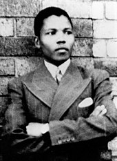
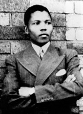

Nelson Mandela Bio
Rolihlahla Mandela was born into the Madiba clan in the village of Mvezo, in the Eastern Cape, on 18 July 1918. His mother was Nonqaphi Nosekeni and his father was Nkosi Mphakanyiswa Gadla Mandela, principal counsellor to the Acting King of the Thembu people, Jongintaba Dalindyebo.In 1930, when he was 12 years old, his father died and the young Rolihlahla became a ward of Jongintaba at the Great Place in Mqhekezweni1.
He attended primary school in Qunu where his teacher, Miss Mdingane, gave him the name Nelson, in accordance with the custom of giving all schoolchildren “Christian” names. He completed his Junior Certificate at Clarkebury Boarding Institute and went on to Healdtown, a Wesleyan secondary school of some repute, where he matriculated. Mandela began his studies for a Bachelor of Arts degree at the University College of Fort Hare but did not complete the degree there as he was expelled for joining in a student protest.
 

Childhood Pictures